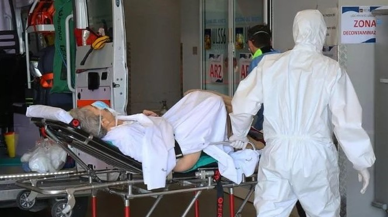
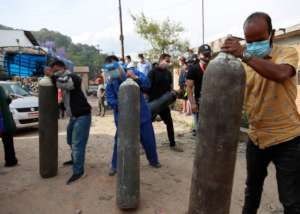

Remember that the happiest
people are not those getting more,
but those giving more.
Make a difference. Make a donation.
Hope you and
your family are safe and secure in your home. Please continue to Stay
Home, Stay Safe to protect yourselves and your loved ones. Unfortunately,
the less privileged, such as - daily wagers, the homeless and the
economically backward are amongst the most vulnerable to be affected by
this lockdown. To help the affected, you can now donate money to any of
our partners and join the fight against COVID-19

COVID Relief Fund
Through this project, you can
provide essential food items and Health Kits to poor and marginalised
families in rural areas. These people are largely neglected and have
little access to Covid related treatment and care. This campaign can help
provide basic nutrition and vitamin and mineral tablets, dry fruits along
with sanitary products like masks, gloves and sanitizers.

Help patients breathe as they battle COVID
Provide oxygen to help India breathe again. At the onset of the pandemic
last year, when hospitals were facing a dire need for protective gear and
equipment, we had responded in record time to stand strong beside our
saviours, our healthcare heroes. The record increase of COVID positive
patients and fatalities per day, lack of life-saving equipment like oxygen
cylinders and concentrators, ventilators and Bipaps is crippling our
healthcare infrastructure.